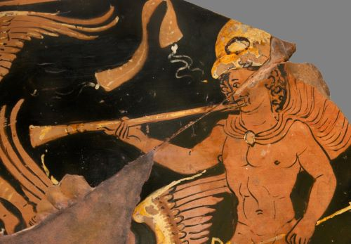
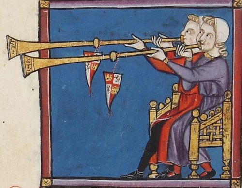
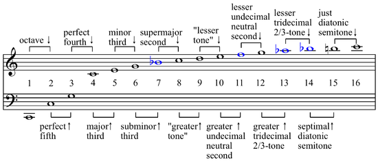
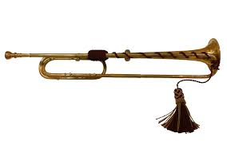
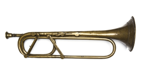

Introduction to the Trumpet
The trumpet dates back thousands of years. The ancestors of the modern trumpet are as varied as they are plentiful, but the word "trumpet" in this sense is meant to refer to any sort of conical instrument that produces sound via the buzzing of the player's lips. For most of its history, the trumpet has been used in warfare. The blowing of the trumpet was loud enough to be heard over the fray of battle, and so trumpets were used to send signals to soldiers on the battlefield. Trumpets began being used for musical purposes during the Renaissance period, primarily in the courts of nobility, and did not join other instrumental musicians such as string orchestras for quite some time. There were various trumpets used in the Baroque era, but these trumpets did not have the same flexibility and versatility as today's valved trumpets, and the Baroque trumpet was therefore extremely limited in what it could and could not play. The invention of the keyed trumpet in the late 1780s changed the course of trumpet history forever, cementing the instrument as a valid instrument for soloistic and ensemble purposes.
An Ancient Roman trumpet
A medieval example of trumpet playing
All instruments use vibration to get their sound, as that is all sound really is. Stringed instruments such as the guitar or violin use the vibration from the plucking of the string or the drawing of the bow on the string to create the sound that we hear. Pianos have dozens of strings tuned to each individual pitch, and when you press down the key, a hammer strikes the corresponding string, creating the sound we know. Brass instruments use air to create sound. When a trumpeter plays a note on the trumpet, they buzz their lips to create vibrations that are then amplified by the instrument to create the sounds we hear. The earliest and most primitive "trumpets" were ost likely conch shells and animal horns that people blew into to create loud sounds. As sound is a science, there are certain laws of physics that instruments have to follow. Brass instruments have what is called a "harmonic/overtone series", which is a series of pitches that a brass instrument can naturally play. These notes are also referred to as "partials". As we can see in the diagram, as the partials get higher, they also get closer together. This meant that in order to play with the same flexibility as a harpsichord or a violin, trumpeters would have to play extremely high. However, as any brass player knows, this is extremely taxing on the muscles in your lips. Most baroque trumpet music is extremely high and extremely taxing for this reason. The key to achieving the chromatic flexibility that string instruments enjoyed was modifying the natural trumpet and allow the player to play more notes. If you made the instrument longer, it would play lower, and if you made the instrument shorter, it would play higher.
The overtone series
Initially, trumpet makers would just make the trumpets in different lengths, so that one trumpet could be pitched in C(meaning that the series started on the C pitch), and another could be pitched in G, and so on and so forth. Trumpeters understandably got tired of lugging around a million different horns, and the Baroque trumpet was created. The Baroque trumpet had a series of holes in the pipe that the player could cover to modify the pitch, similar to how a flute works. This worked somewhat well, but the air that would escape through the uncovered holes messed with the tuning and the tone of the instrument, and the flexbility of stringed instruments was still not achieved. In the 1780s, a man named Anton Weidinger the keyed trumpet, a trumpet with levers and keys on it that kept the holes covered when not in use, but most importantly this keyed trumpey allowed players to utilize the full chromatic scale. With this new instrument, composers like Franz Joseph Haydn were contracted to write concertos for this new trumpet. During the 19th century, the keys were replaced with valves. The valves, when pushed down, redirect the air into a new set of tubing that can alter the pitch of the trumpet. These valves allowed the player to play every note in the chromatic scale, but with more technical ease than the keyed trumpet and without the tuning issues that had plagued the keyed and Baroque trumpets.
The Baroque trumpet. Notice the lack of any sort of valves.
Weidinger's keyed trumpet